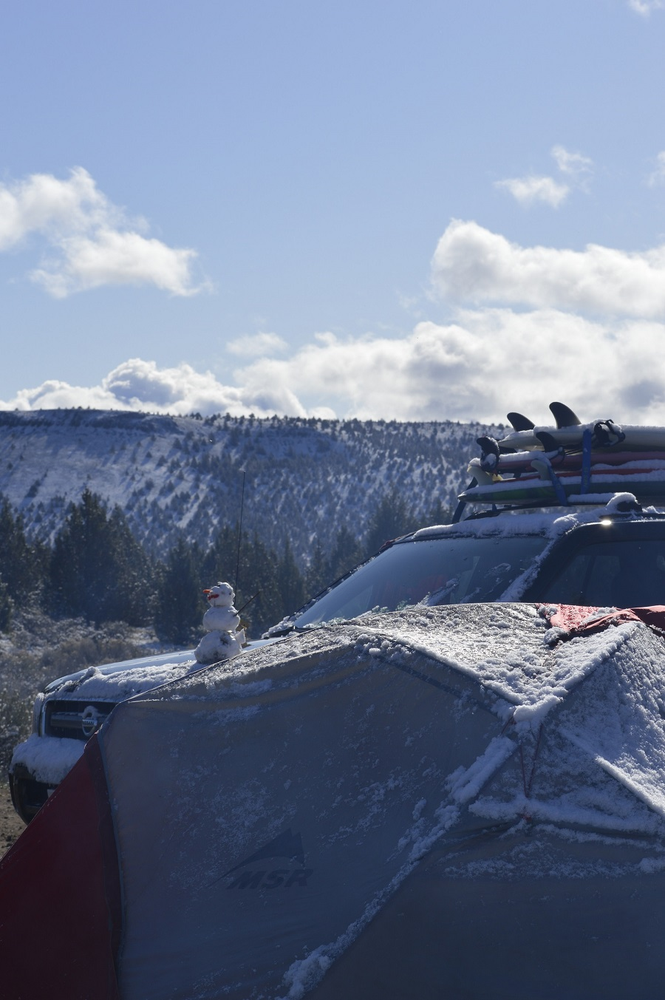

Hello

Hello. This is a collection of stuff I've done. I hope you enjoy or gain some inspiration to do stuff you enjoy.
If you ever have any trip suggestions, questions, want to laugh at my mistakes, or just want to say hi, reach out.
Something simple to look back on stuff
Hello. This is a collection of stuff I've done. I hope you enjoy or gain some inspiration to do stuff you enjoy.
If you ever have any trip suggestions, questions, want to laugh at my mistakes, or just want to say hi, reach out.


Some wonderful people took me along to Smith Rock Oregon in Feb 2022 to surf and climb. We were to loop the state, cutting Eastward on entering and making our way down to the interior, then work our way out to the coast and back up.
I'm writing this 8 months later so it's a bit hazy, but we went pretty much straight to Smith and annihilated every 5.15 in sight. We camped in a few spots over the 5ish days there and it snowed every morning, each beautiful and cold. It was certainly a plus for waittimes ar the crag, but it still surprised me how many climbers were there despite. By midday the snow was usually vaporised with the remainder left to mourn in shadowy spots. It was the first climbing I've done where you couldn't feel what you were holding which was cool. The pic below is a random guy also.
Stick clips are definitely reccomended, every first bolt is on average 60ft off the ground. Several goldfish boxes are also reccomended for climber fuel. Watch out for geese while you're there, very rare and special sight to see. Also a trusty baloncho for keeping your ropes clean and your body warm and your style fresh. It's a place you could spend a whole summer and I'd love to go back. We met up with my friend's friend, a wonderful Bend local who showed us the lovely lively metropolis. Afterward or beforehand we went for a hottub and then headed East to look at small waves and not surf them and get yelled at by campers for taking their parking spots. On our last day we finally made it to our real destination, Forks Washington home of edward cullen. Unfortunately the time we spent in town was experienced at the speed of 50mph as we raced to catch our ferry back to Victoria. A fantastic trip with the best people.
In the future I aim to remember more and write less inside jokes.
PhotosTo cap off 3 months spent in Ucluelet surfing and eating cheese my dear friend Hannah and I travelled from Calgary to Penticton to Calgary on a road trip extravaganza.
She picked me up from the airport in Calgary and we immediately headed to one of the city's 22 costcos for snacks and gas. After watching a man in his broken down car we immediately headed to Penticton for snacks and gas, but got hungry and stopped in Revelstoke to stay at Begbie falls with the rain. Unfortunately we missed the one and only theatre production of Annie in town, so the entire trip was ruined. We travelled on the next day and worked our way to D. Dutchmens to get icecream and licked by cows and then land in Penticton. What was to be 3 days in penticton and ~21 days roadtripping turned out to be a wonderful 1 and a half weeks in pen and 7 days roadtripping, and I wouldn't trade it for anything. If you have never been to Penticton in the summertime, please go. It is a special place.
We spent our days biking, swimming, paddling, climbing, sleeping, discing, dancing, mushroom picking, acting in indie films, and spending lots of time with many cats, dogs, and puppies. It was a sad day when we left but it was time. We had made a friend around Pen during our stay who offered us a place to stay in Grand Forks while we journeyed, which we gladly took him up on. We spent a few nights in his landlocked home-made boathouse and explored the town in the rain. We stumbled on a travelling circus after saunaing at the local aquatic center and watched two motorcyles simultaneously ride inside the sphere of death and ate 10$ popcorn. In the evenings we spent time chatting by candlelight with our friend and were gifted many great stories. After saying goodbye we made our way further East and wiggled up through the mountains to Castlegar to obtain our long-sought 99cent frostys, only to be dissapointed with their non-existence. We pushed on to Nelson and decided to stay in the town's campsite which was quite lovely. I managed to get a bit of DND in with some friends back home, and then we somehow managed to sneak into an ocean alley concert. After hours of dancing we played some pool, found 100$, then went back to the tent to mange on kettle chips. We spent the next night on the mountain and had a jolly fire with warm cider.
From there we went South through Creston and Cranbrook, camped by some lovely hotsprings, awoke at 4am for a hot dip, went to more hotsprings, and ate almond butter in the parking lot. I'm getting lazy here so Radium, Lake Louise, Banff, and Canmore were next and I ran into an old friend from university while a race went on in town. We played some basketball, slacklined, disc golfed, ate lots of ramen, and camped at two jack and in the mountains. Sadly our trip came to an end in Calgary. We scootered as much as we could scoot, ate our icecream, and watched the sun set.
It's probably clear by now that I write like a mental patient, and part of that is I have no patience. With that I miss all the wonderful small moments and music and laughs that took place, and I don't want to disservice them. Those are the best memories.
PhotosSable was fun. Lots of horses and seals and whatnot.
I had the opportunity to spend two months on Sable Island to contribute to the FiTS research project. We arrived at a fancy private plane hangar and enjoyed complimentary icecream and dog petting. We hopped in a prop Norman Islander and left the mainland, flying over swatches of green and white. A break in the clouds granted us a view of the island as we approached, and it's otherworldliness was striking. I've heard it's not uncommon for a clear patch of weather to hang over the island while everywhere else storms, causing scheduled departees to madden as they wonder why they cannot leave. I was amazed at how delicate it seemed from above, so thin and so alone among the ocean. There were many tic tac shaped beings lining the beaches which turned out to be grey seals, around 50,000 of them. We landed on the beach, met the islands lovely residents, and were brought to main station.
Every day was different, and every day was good. Fog or shine the island had something to learn or see, and it was a gift to spend the time that I did there. I got to share many sunsets and sunrises with the horses doing our nocturnal moth and beetle work, and many hours in the water with the seals. They're always looking for swimming partners, not satisfied with their own kin and chasing you down the beach in droves as you run looking for an empty space. The island was filled with fantastic people, fog researchers, bee specialists, parasitologists, ecologists, all of whom had a wealth of knowledge and passion. I spent my days in study design, sampling invertebrates, conducting mapping surveys, veg studies, researching, and assisting other crews. Outside of that I was mainly on the beach watching the seals and horses catching the colours of sunset.
Time is strange on the island. I was there forever, and I'm already back home. I miss it.
PhotosFlights were incredibly cheap at only two weeks ahead and I was eager to get out, so I went. From late November to early December, I was hoping to leave behind the grey green of late fall and return to a winter wonderland, though it was more the other way around. No planning was involved in this trip, and it was lovely all the same.
It began in Cancun, and the 400$ worth of Mexican pesos given to me by my father were met with confusion and vague shrugs by the locals. You would think money from the 80s would still be valid, but it seems they ride only the cutting edge in Mexico. I got in late and spent the night in Cancun, meeting a nice Spanish woman named Carol. We left to Playa Delphines the next morning and ended up joining a mass pilgrimage of Hotel Zone workers forced to walk an hour as the roads got shut down twice. The first time after reopening people laughed and joked on the bus about how this was all just to charge the bus fare twice, and when the road reclosed and their prediction came true they were all quite angry. So we joined the column again and marched on and I got my first taste of Caribbean waters in Mexico, filled with stale churro vendors and ear-ripping music. I left shortly after to Isla Mujeres and walked many miles up and down the small streets of Centro, the island's Northern town. It was quiet and calm and warm during dusk and dawn, and I walked then most.
Two days later I took the bus to the Southern end of the island and spent the next four days there, where I met some lovely people from far places. I learned many things about Europe, Southern Africa, and Central America from travellers with good stories. I feel I learned far more about other countries than about Mexico during my time, so I suppose I'm just afraid of talking to the locals. I spent my days snorkelling, sleeping, walking dogs at the local rescue, admiring iguanas, reading cosmos, calling friends and family, and meeting new people.
I left to Valladolid, met two fun Swedes, danced quite a bit, ate lots of food, had some clothes stolen by a laundromat, and watched people squirt honey into their eyes. I leaned that there’s a common historical pattern in the area of Spaniards stealing stone from holy Mayan sites for their own churches; something that’s shared with the Hydrospeed laundromat. I explored my first cenote there, drank my first coconut in a parking lot, and biked down jungled highways.
Merida was next, a larger and older city, home of the oldest cathedral in the mainland Americas. Neat. There was a mix of festivals going on, and I got to enjoy light art, live music, and street parties around the city. I met an excellent crew my first morning and we went further inland to explore more cenotes, far quieter and cheaper than my first, and by horse powered rail. I saw Merida by foot, fueled by tortas and salbutes, and got to do a lot of hostel-hopping and people-meeting while I was there from overbookings and bedbugs. I’d like to go back one day.
After three or four days I wanted to make it down to Bacalar but decided I was running out of time. I went back to the coast, to Tulum. The town and most of the other coastal cities in the region are environmental disasters which is depressing knowing I was there fueling it. I spent nearly all my time in Tulum biking , chatting, or laying on the beach reading. One day I snorkled and was lucky enough to see some turtles and rays. I met many lovely people while I was there, though in my last few days I got quite sick and shared most of my time with the bed and the bathroom. The trip was fun, and I have many ideas and alterations if I were to do it again. I would bring a sewing kit, and shoes with more than 100 steps left in them (not a joke). Also a personal snorkel if I could fit it. I did enjoy having only a backpack though, and the multiple clothing and possession thefts made it all the easier to carry. Thank you to all who made my trip what it was, both here at home and those I met abroad.
PhotosToo much to say! It’s an injustice to group El Salvador and Guatemala together, I just know I won’t have the patience to write about both separately. Also, I’m not sure if I’ll ever share this website with anyone, so it’s okay and I can say whatever I want. Fuck. OJOHJHBIHBHBKHBHfudtxshgjfjhgvhc fuck fUCK After spending one quick month in Uke and Van to see good friends and get my surf legs back, two amigos and I headed to the airport to begin our 17 hour journey. We left Valentines day and arrived around noon the next day at the hot steamy airport. I was let through customs without uttering a single word, Just a smile and a thumbs up from a chill dude. My good friend's friend who became a good friend picked us up after a short bit of waiting. Demar.
A.

A.
A.
A.

A.
PhotosThis is bold and this is strong. This is italic and this is emphasized.
This is superscript text and this is subscript text.
This is underlined and this is code: for (;;) { ... }. Finally, this is a link.
Fringilla nisl. Donec accum
i = 0;